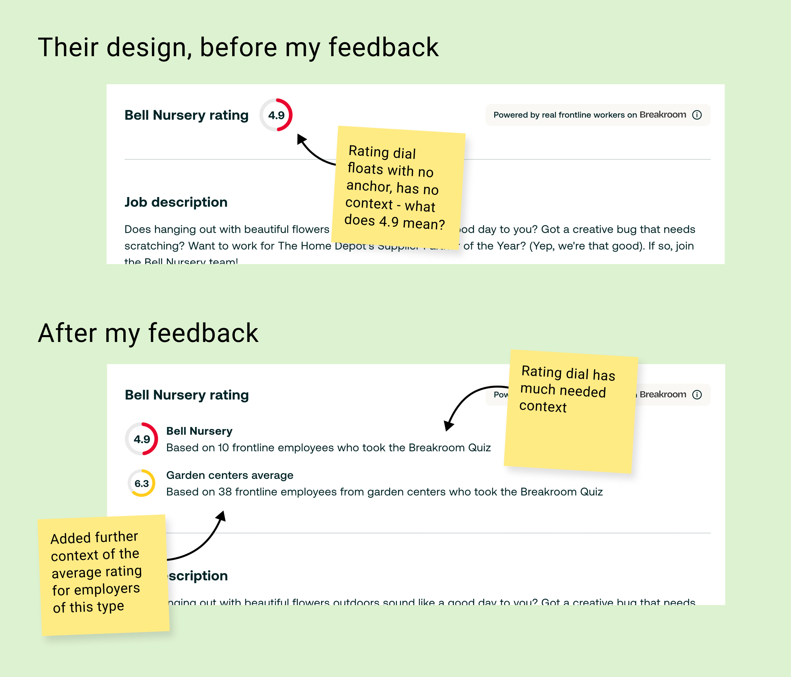

Brief
Why this project existed
Post-acquisition, Breakroom's employer ratings and job findings needed to appear in Ziprecruiter job listings and employer pages, giving job seekers richer context at the point of decision. For paid customers the design also needed to bring in employer's branded content and give employers a reason to invest in branded Ziprecruiter pages, powered by Breakroom.
How we measured success
A design that both teams were happy with, that preserved Breakroom's data integrity (e.g. ratings shown with visible response counts) while also being commercially compelling for our employer sales teams.
My role
Breakroom's design representative in a cross-company collaboration. Initially co-designing alongside the Ziprecruiter designer, which quickly proved to be confusing and involved a lot of stepping on each others toes. Later restructured into a focused feedback and advocacy role, acting as the representative of Breakroom's brand and data principles, and also a voice for paid customers, their user needs and requirements, throughout the project.
The challenge
Breakroom's employer ratings and workplace data was to be woven into Ziprecruiter job listings and employer pages, giving job seekers richer context at the point of their job-seeking decisions. In practice, this meant working alongside a Ziprecruiter designer, providing feedback on their designs and at times jumping into their Figma to help sketch out alternatives.
In practice, having two designers working across timezones on the same surface with at times unclear ownership created friction early on. We were both producing designs with equal standing, which led to a lot of back and forth and confusion. When the project was shelved and later revived, we made a conscious decision to resolve this: the Ziprecruiter designer would lead on execution, while I moved into a support and feedback role.
Three main points of tension
Who is this for?
Ziprecruiter covered all jobs, blue collar and white collar. Breakroom was built around frontline workers, a specific smaller audience with specific needs. The Ziprecruiter team didn't have the same intentional empathy for that specific user type as we did, and approached recruiting the same way across all job types.
How do we show data?
They wanted to use Breakroom's rating dials with no context. I knew that showing a rating without the response count behind it was misleading and untrustworthy, and would undermine Breakroom's credibility with workers.
How bold should we be?
They wanted something simple and safe. Ziprecruiter didn't really push an opinion on job-seekers, it was a neutral platform. Breakroom was founded on a principle of being opinionated on what good work is. So for Zip, I was pushing for something disruptive, a large employer banner, a strong visual identity, because I believed that's what would make employers pay.
The data integrity argument
The sticking point I felt most strongly about was how Breakroom ratings were displayed. The partner team's instinct kept drifting towards showing a clean rating dial, very visually simple, and easy to integrate. I however felt very strongly that this would mislead job-seekers.
Breakroom's ratings are derived from real quiz responses from real workers. The number of responses behind a rating is an integral part of what makes it credible. A 7.2 from 340 responses means something very different to a 7.2 from 8. Stripping that context out weakens the rating, and makes it look like exactly the kind of unverified opinion-based score that Breakroom was designed to be an alternative to.

How the rating dial evolved with my input, from a stripped back dial with no grounding alignment to a contextualised score with response counts that a job seeker can actually use.
I'd written this up in a set of design guidelines specifically for this project that I shared with the Zip team:
"Anywhere that we show a rating or an opinion about how good a job is, we must back this up with evidence."
"The Breakroom Rating is an objective mark of the quality of a job or an employer, and not subjective like most ratings that people often experience in other products or websites. We deliberately didn't choose a 1–5 star rating, because they're associated with opinion-led data (e.g. Trustpilot, Uber, Glassdoor). We know there's a high degree of skepticism around those as they're associated with manipulation."
"We are opinionated on what good work is, which means giving our honest and authentic advice to workers who may not even realise what they deserve in the workplace. Many people on the frontline are young and inexperienced, many come from marginalised groups that are more likely to be treated unfairly. Our users need a trustworthy source of information to help them figure out what a good job really is."
In hindsight, handing over a document of guidelines and assuming it would be read was naive, especially in a cross-company context where the other team had their own priorities and their own design language.
By this time Breakroom's product principles were so instilled in me that I probably assumed others would buy into them very quickly, but I could have done more to create some early introductory workshops, to advocate for our principles and explain why they are so fundamental to our components.
The commercial argument
The partner team really pushed for a very basic and simple design, to be more in-keeping with their minimal site design. My view was that we had to go bold, as we had extensive feedback from employer customers that they bought Breakroom partly due to its large canvas for employer branding.
Employers paying for a presence on a job board need to feel the product is worth the investment, especially when we are fighting for a slice of their budget in a world where Indeed corners the market. A flat, minimal listing gives them nothing to differentiate themselves with. The large banner image I was advocating for was specifically designed to give employers real estate to express their brand, something Indeed and Glassdoor, with their rigid templates, don't offer. That's a selling point, not a stylistic preference.
The design wasn't boundary-pushing for vanity's sake. It was a deliberate argument that the jobs board market was underserving employers, and that Breakroom, and Ziprecruiter, could win big by giving employers pages to be proud of.

The header image went through many iterations and was pushed back on a lot, but I held fast on the larger canvas option. It's a big reason that customers paid for Breakroom and it was important to retain this feature on Ziprecruiter
How it played out
There were periods of misalignment, a point where the work was shelved entirely, and a sustained effort to find common ground with a team that was understandably protective of their product.
The shift came on two fronts. Clarifying our design roles gave the project structure it had been missing. With the Ziprecruiter designer leading and me in a focused feedback role, we stopped pulling in different directions. And when a new Ziprecruiter PM joined who had more context on what Breakroom was and why the data integrity principles mattered, the conversations became much more productive. The design that launched included the large banner image and contextualised response counts — both things I'd been advocating for.
Zip employer pages launched, followed by job details pages. Early feedback from employer sales conversations was really positive, employers responded well to the branded profiles, which validated the commercial argument behind the design direction.
What I'd do differently
Clarify roles and ownership earlier.
A lot of the early friction came from two designers working on the same surface without a clear structure, that's something we should have identified and resolved much sooner.
Find and recruit internal allies earlier.
The project changed when the right PM came on board, and I could have been more proactive about identifying who needed to understand Breakroom's principles and getting them on board sooner.
Earn shared context, don't assume it.
With hindsight I really empathised with the Zip team. We were asking a team to accept constraints on their own product in service of a brand they're still getting to know. I'd spend more time early on making the Breakroom user real to them. Not just sharing abstract principles, but real stories from real frontline workers, and real feedback from customers. That's harder to ignore than a guidelines document.